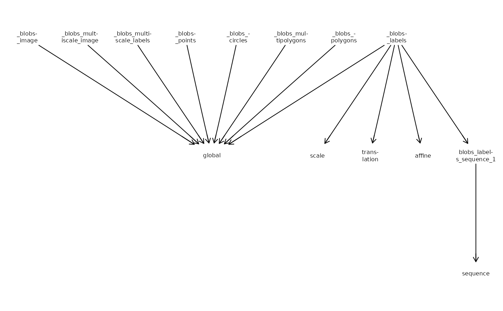
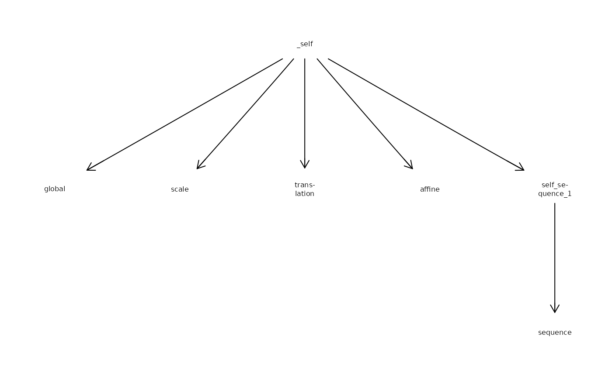

Coord. trans. graph
# S4 method for class 'SpatialData'
CTgraph(x)
# S4 method for class 'SpatialDataElement'
CTgraph(x)
# S4 method for class 'ANY'
CTgraph(x)
# S4 method for class 'SpatialData'
CTpath(x, i, j)
# S4 method for class 'SpatialDataElement'
CTpath(x, j)
# S4 method for class 'ANY'
CTpath(x)
CTplot(g, cex = 0.5, fac = 2, max = 10)SpatialData, an element, or SpatialDataAttrs.
character string; name of source node.
character string; name of target coordinate space.
base R graph; extracted with CTgraph.
scalar numeric; controls fontsize of node labels.
scalar numeric; node labels with nchar>max
are split and hyphenated at position floor(nchar/fac)
CTgraph:
graph::graphAM object with nodes for each element and
coordinate space, and edges for each transformation (if specified)
CTpath:
list of transformations from i to j;
length > 1 if type is "sequential", length-1 otherwise;
each element specifies type and data of the transformation
CTplot:
visualizes the element-coordinate space graph with Rgraphviz
x <- file.path("extdata", "blobs.zarr")
x <- system.file(x, package="SpatialData")
x <- readSpatialData(x, tables=FALSE)
# object-wide
g <- CTgraph(x)
CTplot(g)

# one element
y <- label(x)
g <- CTgraph(y)
CTplot(g)

# retrieve transformation(s)
# from element to target space
CTpath(x, "blobs_labels", "sequence")
#> [[1]]
#> [[1]]$data
#> [[1]]$data[[1]]
#> [1] 3
#>
#> [[1]]$data[[2]]
#> [1] 2
#>
#>
#> [[1]]$type
#> [1] "scale"
#>
#>
#> [[2]]
#> [[2]]$data
#> [[2]]$data[[1]]
#> [1] -50
#>
#> [[2]]$data[[2]]
#> [1] 10
#>
#>
#> [[2]]$type
#> [1] "translation"
#>
#>